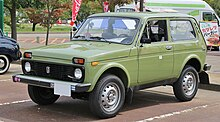
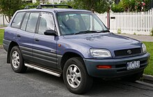
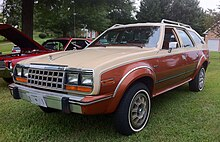

Термін, що походить із Північної Америки, спочатку використовувався для
будь-якого транспортного засобу, який поєднує в собі характеристики двох
різних типів транспортних засобів, тоді як з часом кросовер здебільшого
стосується SUV на базі універсала. Кросовери також описуються як «SUV
автомобілі» або «автомобілі на базі SUV». Термін позашляховик часто
використовується як загальний термін як для кросоверів, так і для
традиційних позашляховиків через схожість між ними.
Кросовери та позашляховики відрізняється тим, що кросовер будується на
платформі «unibody» з несучим кузовом інтегрованим в раму/шасі, натомість
позашляховиками вважаються автомобіді побудоувані на платформі де кузов
встановлений на раму. Однак, на практиці ці терміни часто розмиті і ранні
позащляховики з несучим кузовом (наприклад, Jeep Cherokee 1984 року)
рідко називають кросоверами. Через ці невідповідності термін «позашляховик»
часто використовується як загальний термін як для кросоверів, так і для
традиційних позашляховиків. Порівняно з традиційними позашляховиками,
кросовери, менш здатні до використання в умовах бездоріжжя або для
перевозкм важких вантажів, але натомість пропонують інші переваги,
такі як чудова економія палива та керованість. Порівняно з традиційними
автомобілями з меншим дорожнім просвітом і нижчим дахом, такими як седани
та хетчбеки, кросовери пропонують більше простору у салоні та покращену
посадку за кермом.
Цікавим є факт, що Лада Нива 1977 року є першим у світі серійним позашляховиком
з цілісним несучим кузовом і вважається попередником кросоверів до того, як цей
термін був придуманий і використаний для позначення AMC Eagle 1979, який
вважаться першим кросовером у США. Toyota RAV4, яка була представлена в 1994
році, стала одним з перших автомобілів з сучасною концепцією кросовера.
У США частка ринку кросоверів зросла з менш ніж 4% у 2000 році до майже 40% у 2018 році.
Кросовер
Кросовер (англ. crossover utility vehicle (CUV)) — універсал підвищеної прохідності, що поєднує в собі риси позашляховика та легкового автомобіля.
Походження

ВАЗ-2121 «Нива» 1997 року є першим позашляховиком з несучим кузовом

Toyota RAV4 1994 — перший кросовер в сучасному розумінні цього термінму

AMC Eagle 1979 — перший американський кросовер